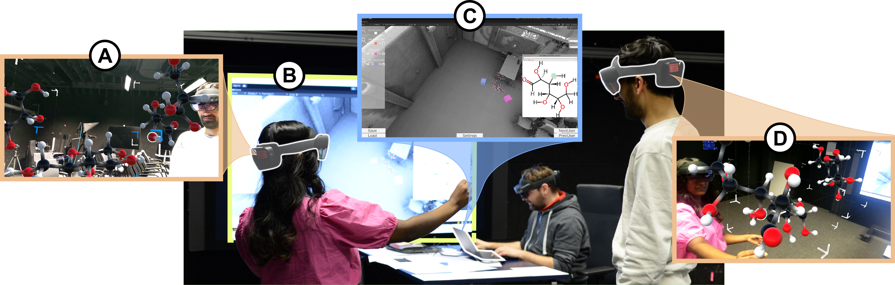
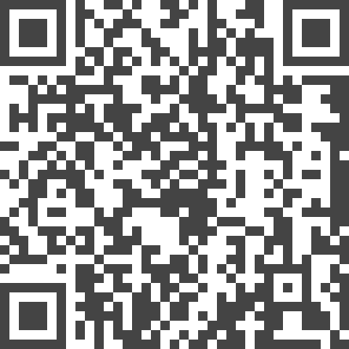

Understanding Collaborative Learning of Molecular Structures in AR with Eye Tracking

Authors. Tobias Rau, Maurice Koch, Nelusa Pathmanathan, Tobias Isenberg, Daniel Weiskopf, Michael Sedlmair, Andreas Köhn, Kuno Kurzhals
Venue. CG&A (2024)
Abstract. We present an approach for on-site instruction of multiple students accompanied by gaze-based monitoring to observe patterns of visual attention during task solving. We focus on collaborative processes in augmented reality (AR) that play an essential role in on-site and remote teaching alike. From a teaching perspective, it is important in such scenarios to communicate content and tasks effectively, observe whether students understand the task, and help appropriately. In our setting, students work with head-mounted displays with eye-tracking support to collaborate in a co-located space. The supervisor can observe the scene and the students and interact with them in a hybrid setup using both AR and a desktop PC. Attention monitoring and guidance are facilitated via a bidirectional mapping between 2D structural formulas and 3D molecules. We showcase our approach with an interactive teaching scenario in which chemistry students learn aspects of stereochemistry by interacting with virtual 3D models of molecular structures. An interview with supervisors and students showed that our approach has much potential in classroom applications for (1) engaging students in collaborative task solving and (2) assisting teachers in monitoring and supporting the learning processes of their students.
